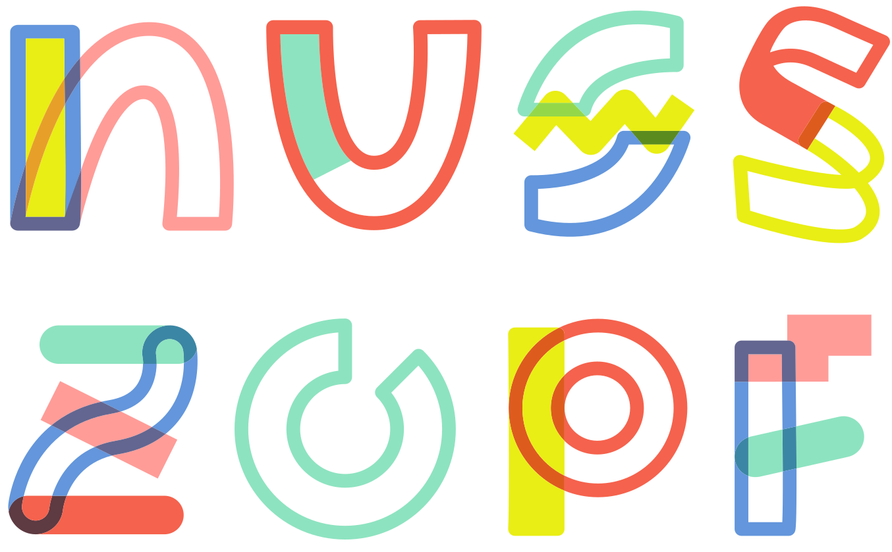

Nusszopf
A free, self-hostable revival of the historical Nusszopf project — the same product, rebuilt on a modern, open-source foundation you can run yourself.
GPL-3.0-or-later · Docker Compose · Self-hosted
What is Nusszopf?
Nusszopf started in 2019 as a community platform for people who want to turn their ideas into projects together, and find others to build them with. Nusszopf 2 is a complete rewrite of that original product: the same functionality, design and workflows, rebuilt from the ground up so it can be self-hosted by anyone.
This is a revival, not a redesign. Every screen and flow is reproduced from the historical application — what changed is the code and infrastructure underneath it.
Self-host it in minutes
All you need is Docker and a domain name — nothing else to install.
See the full deployment guide for reverse proxies, mail configuration and options, and operations for health checks, backups, and upgrades.
Built with
- PHP 8.5
- Laravel 13
- PostgreSQL
- Blade
- Livewire 4
- Tailwind CSS 4
- Redis
- Meilisearch
- Pest
- Playwright
- Docker Compose
- GitHub Actions
Releases
Nusszopf ships as versioned Docker images published on GitHub. Every release lists what changed and how to upgrade.
Free and open source
Nusszopf is free software, licensed under the GNU General Public License v3.0 or later. The source code, issue tracker and discussions are public on GitHub, and contributions are welcome.
Nusszopf 2 is a reimplementation of the historical Nusszopf (web-nusszopf,
be-nusszopf, emails-nusszopf), also licensed under the GPL
v3.0. Its design, copy and email templates are reproduced here as derivative works
under the same license; the original authors retain their copyright in that material.